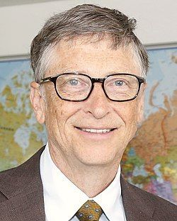

Біл Гейтс
Ві́льям Ге́нрі Гейтс III (англ. William Henry "Bill" Gates III ; * 28 жовтня 1955, Сіетл, США) — американський бізнесмен, інвестор, автор, філантроп і засновник корпорації Майкрософт, співголова Фонду Білла і Мелінди Гейтс. Протягом кар'єри в Microsoft, Гейтс займав позиції голови ради директорів, CEO та головного архітектора, одночасно до травня 2014 також будучи найбільшим акціонером.